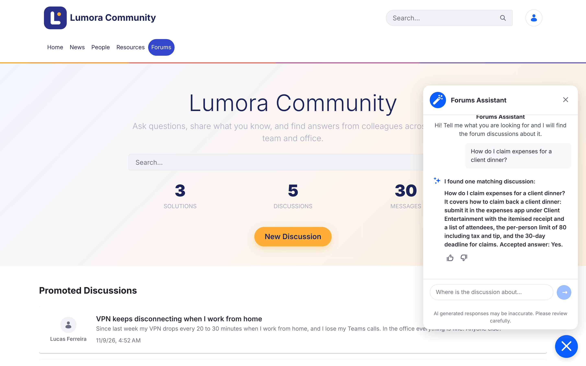
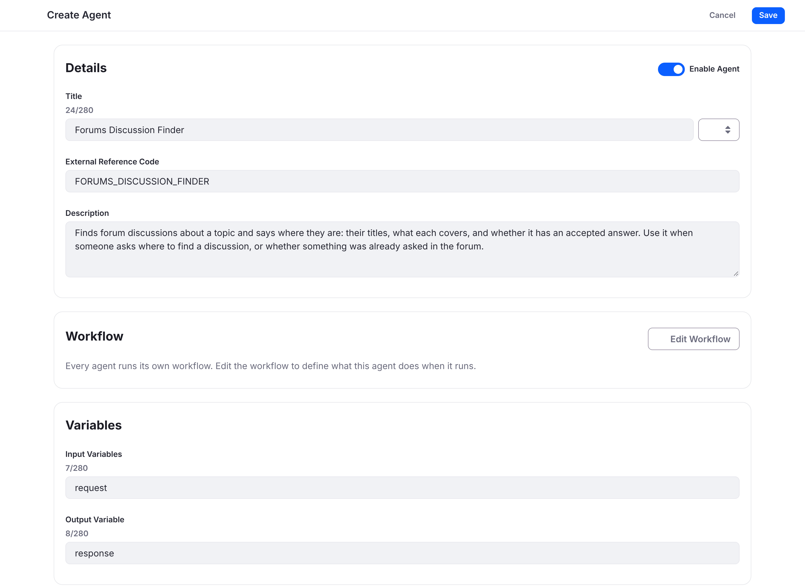
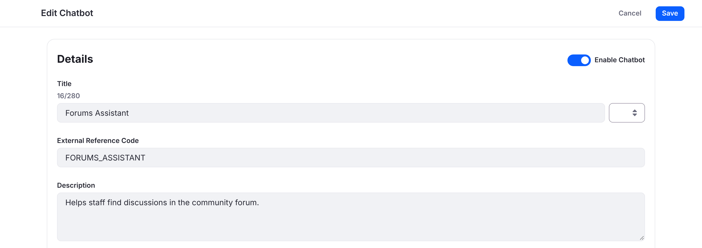
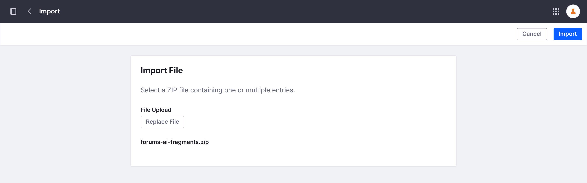
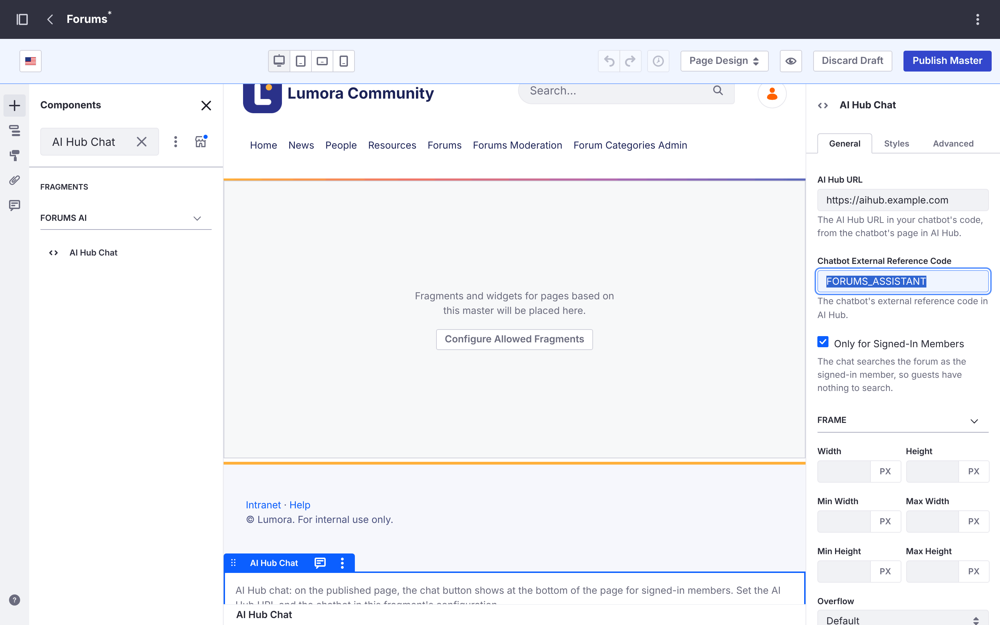
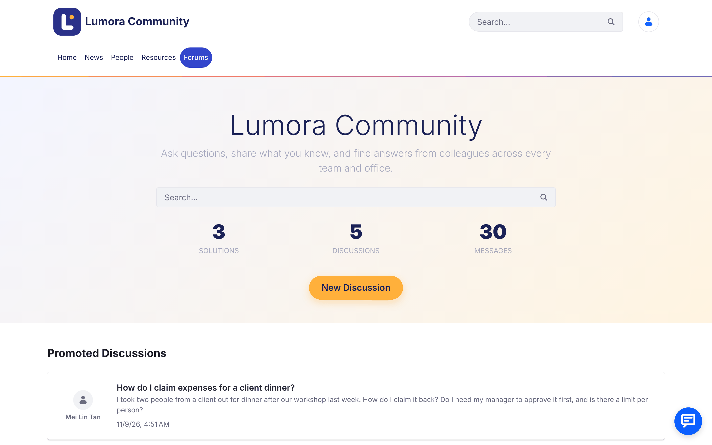

Forums Assistant with AI Hub
Liferay AI Hub is generally available from Liferay DXP 2026.Q3, with a 30-day free trial. On Liferay DXP 2026.Q1, AI Hub is in beta: backports to 2026.Q1 are in progress, and until your update includes them, you request AI Hub support from Liferay Support (Step 2).

Powered by Liferay AI Hub. Liferay AI Hub lets you deploy AI agents that learn, make decisions, and improve your digital experiences, without the technical barriers. Learn about Liferay AI Hub
What You’ll Build
A Forums Assistant chat on your Liferay Forums site. Staff ask everyday questions, such as “How do I claim expenses for a client dinner?” or “Has anyone had the VPN dropping when working from home?”, and the assistant answers with the matching discussions: their titles, what each one covers, and whether it has an accepted answer. It searches the forum as the signed-in member, so it only finds discussions that member can already see.

The screenshots show a forum branded as a fictitious company, Lumora Community, as the Liferay Forums guide describes in Matching Your Company’s Look.
For AI summaries at the top of each discussion, see the AI Discussion Summaries with AI Hub recipe. The two recipes work on their own or together, and share the same fragment set.
Ingredients
| Ingredient | Type | Guide |
|---|---|---|
| Marketplace App | Liferay Forums guide | |
| Liferay AI Hub: an agent and a chatbot | Liferay product (generally available from DXP 2026.Q3; beta on 2026.Q1) | AI Hub, Agent Workflows, Chatbots |
| Liferay DXP connected to AI Hub | DXP feature | Integrating AI Hub with Liferay DXP |
| Fragments and master pages | DXP feature | Managing Fragments, Master Page Templates |
Downloads:
| File | What it is |
|---|---|
| forums-ai-fragments.zip | The Forums AI fragment set: AI Hub Chat puts AI Hub’s chat on the forum’s pages, and AI Summary is for the AI Discussion Summaries |
| forums-discussion-finder.workflow.xml | The workflow of the Forums Discussion Finder agent |
Both are available under the same licenses as Liferay Forums: LGPL-2.1-or-later or the Liferay DXP EULA.
Before you start, you need:
- Liferay DXP 2026.Q3 or later, or Liferay DXP 2026.Q1 LTS with AI Hub support (Step 2), with Liferay Forums 1.0.0 installed, with its required Liferay fixes, and its forum site created. This recipe was tested on 2026.Q1.4 with PostgreSQL.
- An AI Hub account, with the Client ID and Client Secret Liferay provided for it.
- Administrator access to the forum’s Liferay.
- The forum’s Liferay reachable from the internet, so AI Hub can reach it. For testing on your own computer, see the note on tunnels in Integrating AI Hub with Liferay DXP.
Steps
Step 1: Install Liferay Forums
Install Liferay Forums and create the forum site as the Liferay Forums guide describes.
Once the site exists, remove the site initializer zip as the guide says. If it stays deployed, it runs again at every Liferay start and resets the site’s templates and master page, including the chat you add in Step 6.
Step 2: Enable AI Hub on the Forum’s Liferay
The chat runs on the forum’s pages and searches the forum as the signed-in member, so the forum’s Liferay must be connected to AI Hub. Integrating AI Hub with Liferay DXP describes the connection.
-
On Liferay DXP 2026.Q1, request AI Hub support from Liferay Support. 2026.Q1 updates, including 2026.Q1.4 that this recipe was tested on, don’t include everything the connection needs. Open a Support ticket asking for AI Hub support (LPD-93555 and LPD-107054) for your 2026.Q1 update (for example, 2026.Q1.4), and give your current update and hotfix:
LPD What it adds LPD-107054 The connection to AI Hub: the AI Hub settings in Instance Settings (Step 3), and the sign-in the chat uses for members LPD-93555 AI Hub’s searches of the forum as the signed-in member, so the chat only finds what that member can see The AI Hub Chat fragment loads AI Hub’s own chat, so you don’t need other AI Hub backports for this recipe. If you also add the AI Discussion Summaries, ask for LPD-107058 in the same ticket: the summaries run their agent in a workflow step it adds.
Liferay Support provides it as a hotfix or as the update that includes it. AI Hub is in beta on 2026.Q1 and backports are in progress, so a later 2026.Q1 update may include them: check with Liferay Support. On 2026.Q3 and later, where AI Hub is generally available, skip this step.
-
On 2026.Q1, turn on the feature flag: Control Panel → Instance Settings → Feature Flags → Release, then enable AI Hub (LPD-62272). On Liferay Self-Hosted, you can set it in
portal-ext.propertiesinstead:feature.flag.LPD-62272=trueOn 2026.Q3 and later, check this flag only if AI Hub doesn’t appear under Instance Settings → Platform in Step 3.
This recipe was tested on 2026.Q1.4 with a pre-release build of the AI Hub connection, so some labels may differ slightly in your version.
Step 3: Connect the Forum’s Liferay to AI Hub
- In the forum’s Liferay, go to Control Panel → Instance Settings, and under Platform click AI Hub. Enter the Client ID and Client Secret Liferay provided, and the AI Hub Service URL given in Integrating AI Hub with Liferay DXP. Click Save.
- In AI Hub, click Configurations. In Environment URLs, add the forum’s address, such as
https://forums.example.com, and click Save. AI Hub uses this address to search the forum and to let the chat load on the forum’s pages. -
If the forum’s Liferay doesn’t serve the host name in that address yet, add it to the valid host names in
portal-ext.properties, keeping the ones you already use. Otherwise the chat’s searches fail with Invalid host name.virtual.hosts.valid.hosts=localhost,127.0.0.1,forums.example.com
Step 4: Create the Forums Discussion Finder Agent
The agent searches the forum’s discussions with AI Hub’s Liferay Search step, limited to the forum’s topics and replies (the C2M0Thread and C2M0Message objects).
-
Find the two objects’ class names on the forum’s Liferay. They differ on every Liferay installation. With an administrator’s email address and password:
curl -u "admin@example.com:password" "https://forums.example.com/o/object-admin/v1.0/object-definitions/by-external-reference-code/C2M0_THREAD?fields=className" curl -u "admin@example.com:password" "https://forums.example.com/o/object-admin/v1.0/object-definitions/by-external-reference-code/C2M0_MESSAGE?fields=className"Each returns a class name such as
com.liferay.object.model.ObjectDefinition#J6B8. You can also run the same request, getObjectDefinitionByExternalReferenceCode, from the forum’s API Explorer (/o/api, object-admin). - Download forums-discussion-finder.workflow.xml. Replace
C2M0_THREAD_CLASS_NAMEandC2M0_MESSAGE_CLASS_NAMEwith the two class names. - In AI Hub, open the agent builder and click New Agent.
- Add the workflow first, before you fill in the form: the form may not keep what you typed while you edit the workflow.
- Click Edit Workflow, then Source View.
- Replace the whole source with your edited workflow file, and click Update.
- Wait for Workflow updated successfully. AI Hub names the workflow after the agent, so the name in the file doesn’t matter.
- Click Cancel to go back to the agent.
The Diagram View may show only Start and End. The agent’s LLM step is still there: Source View shows it, and the agent runs it.
- Fill in the agent:
- Title:
Forums Discussion Finder - External Reference Code: keep the code AI Hub filled in. Codes are unique across the whole AI Hub, and AI Hub doesn’t warn you when a code you type is taken: it just doesn’t save the agent.
-
Description: the chatbot picks an agent by its description, so use this one, or one that says the same:
Finds forum discussions about a topic and says where they are: their titles, what each covers, and whether it has an accepted answer. Use it when someone asks where to find a discussion, or whether something was already asked in the forum. - Input Variables:
request - Output Variable:
response

- Title:
- Turn on Enable Agent, and click Publish. The agent appears in the agent builder’s list. Without Enable Agent, it’s published inactive and doesn’t run.
The workflow has one LLM step. It names each discussion by its exact title, so people can find it with the forum’s search. Its instructions treat forum posts as data written by members, never as instructions, and only list discussions that appear in the search results.
Step 5: Create the Forums Assistant Chatbot
In AI Hub, add a chatbot:
- Title:
Forums Assistant - External Reference Code:
FORUMS_ASSISTANT, or the code AI Hub suggests - Description:
Helps staff find discussions in the community forum. - Assigned Agents: Forums Discussion Finder
- Placeholder Message:
Where is the discussion about... - Intro Message:
Hi! Tell me what you are looking for and I will find the forum discussions about it. - Suggested questions: a few questions your staff ask, such as How do I claim expenses for a client dinner? or Where are the latest logo files and slide templates?
- Allow guest access: off. The chat searches as the signed-in member, so guests have nothing to search.

Save it. Its page then shows the Chatbot Code. You need two values from it in Step 6: the AI Hub address (ai-hub-url) and the chatbot’s external reference code (chatbot-external-reference-code).
Step 6: Add the Chat to the Forum Site
-
Import the fragment. Download forums-ai-fragments.zip. In the forum site, go to Design → Fragments, open the actions menu (⋮) next to Fragment Sets, and choose Import. Select the zip and click Import. The Forums AI fragment set appears, with the AI Hub Chat and AI Summary fragments. If you’ve already imported it for the AI Discussion Summaries, you have it already.

- Place it on every forum page. Go to Design → Page Templates → Masters and open Forums. Search for AI Hub Chat and drag it below the footer. Select it, and in its settings enter:
- AI Hub URL: the
ai-hub-urlfrom the chatbot’s code - Chatbot External Reference Code: the chatbot’s code, such as
FORUMS_ASSISTANT - Only for Signed-In Members: leave it checked

- AI Hub URL: the
- Click Publish Master.
To update the fragment later, import the new zip with Overwrite Existing Items checked, then open the fragment’s actions menu, choose View Usages, select all and click Propagate: placed fragments keep their old version until then. See Propagating Fragment Changes.
Result
Sign in to the forum as a member. The chat button shows at the bottom right of every forum page.

Open it and ask about a discussion that you know exists, such as How do I claim expenses for a client dinner? The assistant names the matching discussion, says what it covers and whether it has an accepted answer, as in the screenshot at the top of this page. If a discussion has a suspicious post, such as one asking the AI to do something, it says so rather than repeating it.
Check that:
- Guests don’t see the chat button, with Only for Signed-In Members checked.
- The assistant finds only what the member can see: a discussion a member can’t open doesn’t appear in their answers.
Known limitations:
- Answers name discussions by title, without links: AI Hub’s search results don’t include the discussions’ page addresses yet. Members find a discussion with the forum’s search.
- If the chat doesn’t load or answer, check that the forum’s address is in AI Hub’s Environment URLs (Step 3) exactly as members open it, including
https://.
Where next:
- Matching Your Company’s Look in the Liferay Forums guide, to brand the forum like the screenshots.
- AI Discussion Summaries with AI Hub, for a summary at the top of each busy discussion.